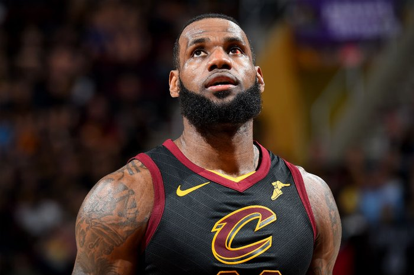

Quem gosta de basquete e acompanha a NBA atualmente pode se sentir privilegiado. Desde 2003, um dos maiores jogadores da história do esporte desfila seu talento na liga norte-americana. É claro que estamos falando de LeBron James!
Quem é LeBron James?LeBron James é um dos melhores jogadores da história do basquete. Nascido em 30 de dezembro de 1984, em Akron, no estado de Ohio, nos Estados Unidos, ele iniciou sua trajetória na NBA em 2003, no Cleveland Cavaliers. Passou também pelo Miami Heat e, atualmente, defende o Los Angeles Lakers.
Apelidado de King James, LeBron foi tetracampeão da NBA, conquistando os títulos em 2012, 2013, 2016 e 2020.
Em todos esses anos, foi escolhido o Most Valuable Player (Jogador Mais Valioso) das Finais. Ele também foi o MVP da temporada regular em 2009, 2010, 2012 e 2013.
Pela Seleção dos Estados Unidos, LeBron James foi bicampeão olímpico, em Pequim 2008 e Londres 2012, além de ter conquistado uma medalha de bronze em Atenas 2004. Ele também um bronze no Mundial de 2006, disputado no Japão.
LeBron James começou a jogar basquete em sua cidade natal, Akron, numa das regiões mais pobres dos Estados Unidos. O esporte foi um aliado para que ele não se envolvesse com a criminalidade e pudesse ajudar sua mãe.
Gloria James teve LeBron quando ela tinha apenas 16 anos de idade. O pai não quis se envolver na criação do futuro astro do basquete, e ela influenciou a ida do filho para o basquete dando a ele uma bola.
Estudando na St. Mary High School, LeBron James começou a chamar a atenção do mundo do basquete. Ao aliar força e velocidade, ele foi eleito por três vezes “Ohio Mr. Basketball”.
LeBron James chegou à NBA antes mesmo de ter passado pela universidade, como é o caminho natural da grande maioria dos atletas em esportes norte-americanos.
LeBron James foi selecionado pelo Cleveland Cavaliers na primeira escolha do draft de 2003. O astro vindo do high school foi escolhido antes de outras futuras grandes estrelas, como Carmelo Anthony, Chris Bosh e Dwyane Wade.
Em sua primeira temporada, ele foi escolhido o melhor calouro da liga ao manter médias de 20 pontos, 5,9 assistências e 5,5 rebotes por jogo.
Sob a liderança de LeBron James, o Cleveland Cavaliers chegou à sua primeira final da NBA e foi vice-campeão em 2007, quando perdeu a final da NBA para o San Antonio Spurs por 4 a 0.
Nos anos seguintes, LeBron e os Cavaliers não conseguiram voltar à final. Em 2010, o astro se tornou agente livre e decidiu mudar de franquia. Em um programa especial da ESPN, que recebeu o nome de The Decision, ou A Decisão, ele anunciou sua ida para o Miami Heat, formando um trio com as estrelas Dwyane Wade e Chris Bosh.
Na primeira versão de Space Jam, em 1996, em uma tentativa desesperada de ganhar uma partida de basquete e ganhar sua liberdade, os Looney Tunes buscam a ajuda do campeão aposentado de basquete Michael Jordan.
Na próxima edição de Space Jam, será a vez de vermos Lebron James como companheiro do Pernalonga!
Este documentário segue o astro da NBA LeBron James e quatro de seus talentosos companheiros de equipe durante os treinamentos e duelos do basquete colegial em Ohio, antes de The King chegar ao Cleveland Cavaliers.